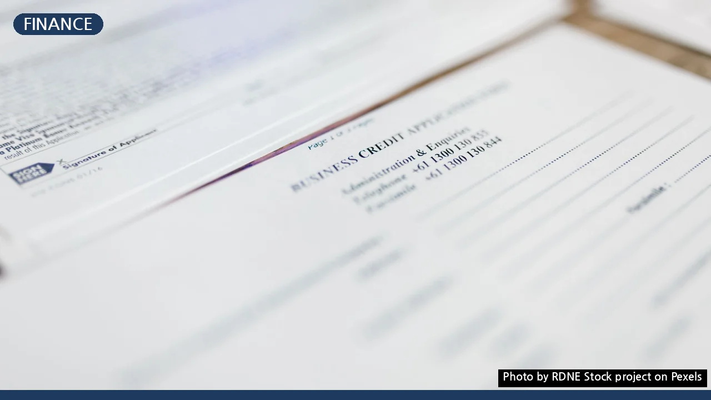
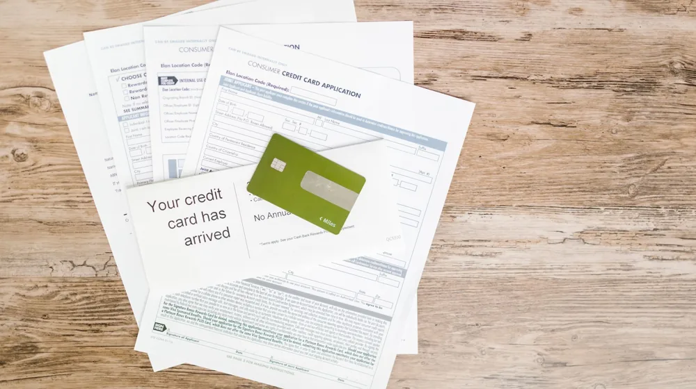

신용대출, 실패 없이 받는 3가지 핵심 조건과 신청 가이드
사진: RDNE Stock project / Pexels (무료 이미지, 출처 표기)
신용대출, 이런 사람이 받을 수 있어요 (핵심 조건)

신용대출을 고려 중이신가요? 어떤 조건을 충족해야 하는지, 나에게 맞는 상품은 무엇인지, 그리고 복잡한 신청 과정은 어떻게 되는지 막막하게 느끼는 분들이 많습니다. 이 글은 신용대출의 핵심 자격 조건부터 성공적인 대출을 위한 노하우, 그리고 실제 신청 절차까지 명확하게 안내해 드립니다. 지금부터 신용대출에 대한 궁금증을 해소하고, 현명한 금융 결정을 내릴 수 있도록 돕겠습니다.
신용대출은 담보 없이 개인의 신용을 기반으로 돈을 빌리는 상품입니다. 따라서 금융기관은 대출 신청자의 상환 능력을 가장 중요하게 평가합니다. 일반적으로 다음과 같은 세 가지 주요 조건을 충족해야 합니다.
가장 기본적으로 만 19세 이상의 성인이어야 하며, 금융기관마다 정한 최소한의 신용점수를 충족해야 합니다. NICE평가정보나 KCB 같은 신용평가기관의 점수를 활용하며, 1금융권(시중은행)은 비교적 높은 신용점수를 요구하는 경향이 있습니다.
안정적인 소득 또한 중요한 조건입니다. 급여 소득자라면 최소 3개월에서 6개월 이상의 재직 기간과 건강보험, 국민연금 가입 내역을 확인합니다. 개인사업자나 프리랜서의 경우 소득 금액 증명원 등으로 소득의 연속성을 입증해야 합니다.
마지막으로 기존 대출이 너무 많거나 연체 기록이 있다면 대출 승인이 어렵습니다. 금융기관은 총부채원리금상환비율(DSR, 개인이 1년 동안 갚아야 하는 대출 원리금이 연 소득에서 차지하는 비중) 등을 통해 채무 상환 능력을 종합적으로 평가하므로, 기존 대출 규모를 적정하게 유지하는 것이 중요합니다.
나에게 맞는 신용대출 상품, 어떻게 고를까?
신용대출은 취급 기관에 따라 조건과 금리가 크게 달라집니다. 크게 1금융권(은행), 2금융권(저축은행, 보험사, 카드사 등), 그리고 대부업으로 나눌 수 있습니다. 각 기관의 특징을 이해하고 본인에게 가장 유리한 상품을 선택하는 것이 중요합니다.
- 1금융권(은행): 시중은행은 비교적 낮은 금리로 대출을 받을 수 있는 장점이 있습니다. 주거래 고객에게는 우대금리 혜택을 제공하기도 합니다. 하지만 심사 기준이 엄격하고, 신용점수 및 소득 조건이 까다로운 편입니다.
- 2금융권(저축은행, 보험사, 카드사 등): 은행보다는 문턱이 낮아 신용점수가 다소 낮거나 소득 조건이 충분치 않아도 대출이 가능할 수 있습니다. 금리는 1금융권보다 높지만, 필요한 금액을 비교적 신속하게 빌릴 수 있다는 장점이 있습니다.
- 대부업: 가장 높은 금리가 적용되지만, 대출 승인율은 높은 편입니다. 급전이 필요한 경우가 아니라면 신중하게 고려해야 하며, 상환 계획을 철저히 세우는 것이 필수입니다.
각 금융기관의 대출 상품은 금리, 한도, 상환 방식(원리금균등, 원금균등, 만기일시) 등이 다양합니다. 핀다, 카카오페이, 토스 같은 금융 플랫폼을 통해 여러 금융기관의 상품을 한눈에 비교해보고, 자신에게 가장 유리한 조건을 찾아보는 것을 추천합니다.
신용대출 신청 절차, 단계별로 알아보기
신용대출 신청은 보통 다음과 같은 단계로 진행됩니다. 대부분의 과정은 온라인으로도 가능해 시간과 노력을 절약할 수 있습니다.
- 대출 상품 비교 및 선택: 앞서 언급했듯이, 다양한 금융기관의 상품을 비교하여 자신에게 가장 적합한 대출 상품을 선택합니다. 은행 앱, 금융 플랫폼 등을 활용하면 편리합니다.
- 신청 및 서류 제출: 선택한 금융기관의 온라인 채널(앱, 웹사이트) 또는 영업점을 방문하여 대출을 신청합니다. 이때 신분증, 소득 증빙 서류(재직증명서, 건강보험자격득실확인서, 소득금액증명원 등), 주민등록등본 등의 서류를 제출합니다. 공인인증서를 통해 스크래핑 방식으로 서류를 자동 제출하는 경우도 많습니다.
- 심사: 금융기관은 제출된 서류와 개인 신용정보를 바탕으로 대출 가능 여부와 한도, 금리를 심사합니다. 이 과정에서 재직 여부나 소득 확인을 위한 전화가 올 수도 있습니다.
- 계약 및 대출 실행: 심사 승인이 나면 대출 약정을 체결하고, 지정된 계좌로 대출금이 입금됩니다. 약정 시 상환 조건과 금리, 중도상환수수료 등 주요 내용을 꼼꼼히 확인해야 합니다.
2026년 9월 기준으로 많은 금융기관이 비대면 대출 신청 시스템을 잘 갖추고 있으므로, 대부분의 과정을 집에서 편리하게 진행할 수 있습니다. 다만, 특정 조건에서는 영업점 방문을 요구할 수 있으니 미리 확인하는 것이 좋습니다.
신용점수 관리, 대출 성공의 첫걸음
신용점수는 신용대출의 핵심 조건 중 하나이며, 대출 한도와 금리를 결정하는 중요한 요소입니다. 평소 신용점수를 꾸준히 관리하는 것이 현명한 금융 생활의 기본입니다.
신용점수를 관리하는 방법은 다음과 같습니다.
- 연체 금지: 신용카드 대금, 통신비, 공과금 등 모든 연체는 신용점수에 치명적인 영향을 미칩니다. 소액이라도 연체하지 않도록 주의하고, 자동이체를 설정하여 놓치는 일이 없도록 합니다.
- 신용카드 적정 사용: 신용카드를 꾸준히 사용하고 대금을 연체 없이 잘 갚는 것은 신용점수 향상에 도움이 됩니다. 다만, 한도 대비 과도하게 사용하는 것은 좋지 않습니다.
- 주거래 은행 활용: 한 은행과 꾸준히 거래하며 예금, 적금, 카드 등을 이용하면 해당 은행에서 신용도를 높게 평가하여 대출 시 우대 혜택을 받을 가능성이 커집니다.
- 대출 현황 관리: 대출 건수가 너무 많거나, 단기간에 여러 번 대출 조회를 하는 것은 신용점수에 부정적인 영향을 줄 수 있습니다. 필요한 만큼만 대출을 받고, 연체 없이 성실하게 상환하는 것이 중요합니다.
본인의 신용점수는 NICE지키미, 올크레딧 같은 신용평가사의 웹사이트나 금융기관 앱을 통해 무료로 조회할 수 있습니다. 주기적으로 신용점수를 확인하고 관리하는 습관을 들이는 것이 좋습니다.
신용대출 시 반드시 알아야 할 주의사항
신용대출은 편리하지만, 몇 가지 주의사항을 간과하면 예상치 못한 어려움에 처할 수 있습니다. 현명한 대출 이용을 위해 다음 사항들을 반드시 숙지하세요.
신용대출은 현명하게 활용하면 재정적 문제를 해결하고 기회를 잡는 데 도움이 될 수 있습니다. 하지만 항상 신중하게 접근하고, 본인의 상환 능력을 최우선으로 고려하는 자세가 필요합니다. 궁금한 점은 금융감독원이나 해당 금융기관에 문의하여 정확한 정보를 얻는 것이 가장 좋습니다.
🔗 이 글도 함께 보면 좋아요: 보험 리모델링 실패 피하는 3가지 핵심 원칙 (손해보지 마세요!)